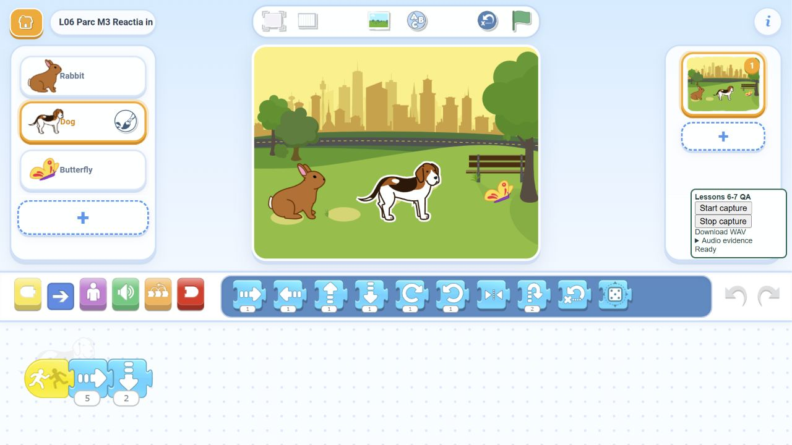

ScratchJr · Lecția 6 · 6–7 ani
Parcul cu surprize 50 de minute · trei misiuni · un puzzle dificil · două rezerve suplimentare
Numai resurse din aplicație. Copiii construiesc; nu importă proiecte.
Ghid PDF Cartonașe PDF Soluții Testare Instrucțiuni Puzzle-uri și idei proprii Exemplu de pornire: Leapșa pornește o reacție · Playground Games - Tag (lecția 5) , adaptat pentru lecția noastră.
Minutele 37-45 · 8 minute pentru creația mea: Surpriza întâlnirii. Păstrează o întâlnire care funcționează și inventează reacția personajului atins. Alege Pop, o săritură sau un efect vizual cunoscut. Decide de ce reacționează astfel în povestea ta. Păstrează mișcarea de separare după contact.
Fiecare copil personalizează un program care îi funcționează. Provocarea dificilă și rezervele rămân disponibile; folosim numai biblioteca ScratchJr.
Ghidul profesorului · pas cu pas → Reset, apoi un singur steag. Păstrează mărimile inițiale și verifică separarea după contact.
Misiunea 1
Trezește paznicul Un steag. O întâlnire. O reacție.
Iepurele ajunge la câine. Nu atingem câinele cu degetul. La contact, câinele spune Pop și urcă, eliberând drumul. Se aude un singur Pop. Reset și încă o probă. Câinele așteaptă contactul, apoi se separă de iepure.
Misiunea 2
Două vizite Cine este întâlnit primul?
Iepurele merge mai întâi la câine, apoi la fluture. Câinele spune Pop și urcă. Fluturele urcă fără sunet. Un singur steag, două reacții în ordinea întâlnirilor. Nimeni nu reacționează înainte să fie atins pe scenă.
Misiunea 3 - dificilă
Reacția în lanț Iepure → câine → fluture
Iepurele ajunge la câine, pe traseul scurt. Câinele merge la fluture, apoi coboară ca să se separe. Fluturele spune Pop și urcă. Un steag, fără mesaje sau alte atingeri. Reacția trece prin trei personaje și se oprește. Reset și repetă.
Rezervă 1 - 6-8 minute
Comoara Mingea devine o comoară de adunat.
Un steag duce iepurele până la minge. La contact: un Pop, apoi mingea dispare. Reset aduce comoara înapoi. Încearcă din nou. Mingea reacționează la contact, fără să o atingi cu degetul.
Rezervă 2 - 8-10 minute
Alarma la distanță Contact aproape. Semnal departe.
Iepurele atinge câinele. Câinele urcă și trimite un mesaj. Fluturele aflat sus crește, așteaptă, apoi revine la mărimea inițială. Nimeni nu atinge fluturele. Reset și încă o probă. Contactul pornește câinele. Mesajul pornește fluturele.
Exemplu verificat în browser Captură din portul comunitar ScratchJr. Instrucțiunile pentru copii folosesc biblioteca aplicației instalate.
